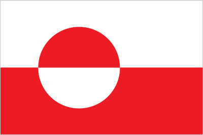
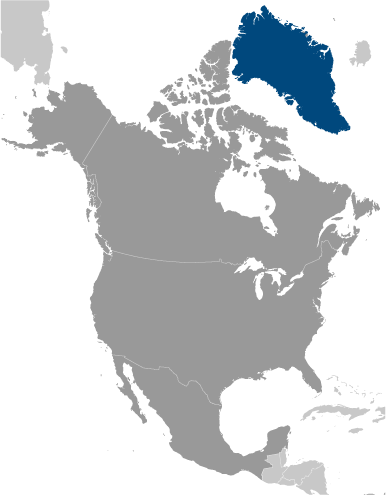
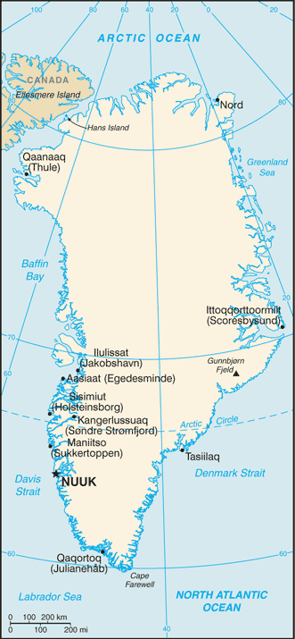

North America :: GREENLAND
Introduction :: GREENLAND
-
Greenland, the world's largest island, is about 81% ice-capped. Vikings reached the island in the 10th century from Iceland; Danish colonization began in the 18th century, and Greenland became an integral part of the Danish Realm in 1953. It joined the European Community (now the EU) with Denmark in 1973 but withdrew in 1985 over a dispute centered on stringent fishing quotas. Greenland was granted self-government in 1979 by the Danish parliament; the law went into effect the following year. Greenland voted in favor of increased self-rule in November 2008 and acquired greater responsibility for internal affairs when the Act on Greenland Self-Government was signed into law in June 2009. Denmark, however, continues to exercise control over several policy areas on behalf of Greenland, including foreign affairs, security, and financial policy in consultation with Greenland's Self-Rule Government.
Geography :: GREENLAND
-
Northern North America, island between the Arctic Ocean and the North Atlantic Ocean, northeast of Canada72 00 N, 40 00 WArctic Regiontotal: 2,166,086 sq kmland: 2,166,086 sq km (410,449 sq km ice-free, 1,755,637 sq km ice-covered)country comparison to the world: 12slightly more than three times the size of Texas0 km44,087 kmterritorial sea: 3 nmexclusive fishing zone: 200 nm or agreed boundaries or median linecontinental shelf: 200 nm or agreed boundaries or median linearctic to subarctic; cool summers, cold wintersflat to gradually sloping icecap covers all but a narrow, mountainous, barren, rocky coastlowest point: Atlantic Ocean 0 mhighest point: Gunnbjorn Fjeld 3,700 mcoal, iron ore, lead, zinc, molybdenum, diamonds, gold, platinum, niobium, tantalite, uranium, fish, seals, whales, hydropower, possible oil and gasagricultural land: 0.6%arable land 0%; permanent crops 0%; permanent pasture 0.6%forest: 0%other: 99.4% (2011 est.)NAcontinuous permafrost over northern two-thirds of the islandprotection of the arctic environment; preservation of the Inuit traditional way of life, including whaling and seal huntingdominates North Atlantic Ocean between North America and Europe; sparse population confined to small settlements along coast; close to one-quarter of the population lives in the capital, Nuuk; world's second largest ice cap
People and Society :: GREENLAND
-
noun: Greenlander(s)adjective: GreenlandicInuit 88%, Danish and other 12% (2010 est.)Greenlandic (East Inuit) (official), Danish (official), EnglishEvangelical Lutheran, traditional Inuit spiritual beliefs57,733 (July 2015 est.)country comparison to the world: 2060-14 years: 21.35% (male 6,263/female 6,064)15-24 years: 16.2% (male 4,736/female 4,615)25-54 years: 42.03% (male 12,751/female 11,516)55-64 years: 11.87% (male 3,858/female 2,996)65 years and over: 8.55% (male 2,640/female 2,294) (2015 est.)total: 33.6 yearsmale: 34.9 yearsfemale: 32.3 years (2014 est.)0% (2015 est.)country comparison to the world: 19014.48 births/1,000 population (2015 est.)country comparison to the world: 1378.49 deaths/1,000 population (2015 est.)country comparison to the world: 85-5.98 migrant(s)/1,000 population (2015 est.)country comparison to the world: 198urban population: 86.4% of total population (2015)rate of urbanization: 0.74% annual rate of change (2010-15 est.)NUUK (capital) 17,000 (2014)at birth: 1.05 male(s)/female0-14 years: 1.03 male(s)/female15-24 years: 1.03 male(s)/female25-54 years: 1.11 male(s)/female55-64 years: 1.29 male(s)/female65 years and over: 1.15 male(s)/femaletotal population: 1.1 male(s)/female (2015 est.)total: 9.23 deaths/1,000 live birthsmale: 10.54 deaths/1,000 live birthsfemale: 7.85 deaths/1,000 live births (2015 est.)country comparison to the world: 144total population: 72.1 yearsmale: 69.41 yearsfemale: 74.92 years (2015 est.)country comparison to the world: 1432.03 children born/woman (2015 est.)country comparison to the world: 1161.67 physicians/1,000 population (2009)5.8 beds/1,000 population (2009)improved:urban: 100% of populationrural: 100% of populationtotal: 100% of populationunimproved:urban: 0% of populationrural: 0% of populationtotal: 0% of population (2015 est.)improved:urban: 100% of populationrural: 100% of populationtotal: 100% of populationunimproved:urban: 0% of populationrural: 0% of populationtotal: 0% of population (2015 est.)NANANA
Government :: GREENLAND
-
conventional long form: noneconventional short form: Greenlandlocal long form: nonelocal short form: Kalaallit Nunaatpart of the Kingdom of Denmark; self-governing overseas administrative division of Denmark since 1979parliamentary democracy within a constitutional monarchyname: Nuuk (Godthab)geographic coordinates: 64 11 N, 51 45 Wtime difference: UTC-3 (2 hours ahead of Washington, DC, during Standard Time)daylight saving time: +1hr, begins last Sunday in March; ends last Sunday in Octobernote: Greenland has four time zones4 municipalities (kommuner, singular kommune); Kujalleq, Qaasuitsup, Qeqqata, Sermersooqnote: the North and East Greenland National Park (Avannaarsuani Tunumilu Nuna Allanngutsaaliugaq) and the Thule Air Base in Pituffik (in northwest Greenland) are two unincorporated areas; the national park's 972,000 sq km - about 46% of the island - make it the largest national park in the world and also the most northerlynone (extensive self-rule as part of the Kingdom of Denmark; foreign affairs is the responsibility of Denmark, but Greenland actively participates in international agreements relating to Greenland)June 21 (longest day)previous 1953 (Greenland established as a constituency in the Danish constitution), 1979 (Greenland Home Rule Act); latest 21 June 2009 (Greenland Self-Government Act) (2009)the laws of Denmark apply18 years of age; universalchief of state: Queen MARGRETHE II of Denmark (since 14 January 1972), represented by High Commissioner Mikaela ENGELL (since April 2011)head of government: Prime Minister Kim KIELSEN (since 30 September 2014)cabinet: Home Rule Government elected by the Parliament (Landsting) on the basis of the strength of partieselections/appointments: the monarchy is hereditary; high commissioner appointed by the monarch; prime minister indirectly elected by Parliamentelection results: Kim KIELSEN elected prime minister; Parliament vote - Kim KIELSEN (S) 34.3%, Sara OLSVIG (IA) 33.2%, Anda ULDUM (D) 11.8%, other 20.7%description: unicameral Parliament or Inatsisartut (Landsting) (31 seats; members directly elected in multi-seat constituencies by proportional representation vote to serve 4-year terms)note: two representatives were elected to the Danish Parliament or Folketing on 15 September 2011 (next to be held by September 2015); percent of vote by party - NA; seats by party - Siumut 1, Inuit Ataqatigiit 1elections: last held on 28 November 2014 (next to be held by 2018)election results: percent of vote by party - S 34.3%, IA 33.2%, A 6.5%, PI 11.6%; D 11.8%; other 2.1%; seats by party - S 11, IA 11, A 2, PI 3, D 4 (2013)highest court(s): High Court of Greenland (consists of the presiding professional judge and 2 lay assessors); note - appeals beyond the High Court of Greenland can be heard by the Supreme Court (in Copenhagen)judge selection and term of office: judges appointed by the monarch upon the recommendation of the Judicial Appointments Council, a 6-member independent body of judges and lawyers; judges appointed for life with retirement at age 70subordinate courts: Court of Greenland; 18 district or magistrates' courtsDemocrats Party (Demokraatit) or D [Jens B. FREDERIKSEN]Forward Party (Siumut) or S [Aleqa HAMMOND]Inuit Community (Inuit Ataqatigiit) or IA [Kuupik KLEIST]Inuit Party (Partii Inuit) or PI [Nikku OLSEN]Solidarity Party (Atassut) or A [Gerhardt PETERSEN]other: conservationists; environmentalistsArctic Council, ICC, NC, NIB, UPUnone (self-governing overseas administrative division of Denmark)none (self-governing overseas administrative division of Denmark)two equal horizontal bands of white (top) and red with a large disk slightly to the hoist side of center - the top half of the disk is red, the bottom half is white; the design represents the sun reflecting off a field of ice; the colors are the same as those of the Danish flag and symbolize Greenland's links to the Kingdom of Denmarkpolar bear; national colors: red, whitename: "Nunarput utoqqarsuanngoravit" ("Our Country, Who's Become So Old" also translated as "You Our Ancient Land")lyrics/music: Henrik LUND/Jonathan PETERSENnote: adopted 1916; the government also recognizes "Nuna asiilasooq" as a secondary anthem
Economy :: GREENLAND
-
The economy remains critically dependent on exports of shrimp and fish, income from resource exploration and extraction, and on a substantial subsidy from the Danish Government. The subsidy was budgeted to be about $651 million in 2012, approximately 56% of government revenues that year.The public sector, including publicly owned enterprises and the municipalities, plays the dominant role in Greenland's economy. Greenland's real GDP contracted about 1% in 2009 as a result of the global economic slowdown, but is estimated to have grown marginally in 2010-14.During the last decade the Greenland Home Rule Government (GHRG) pursued conservative fiscal and monetary policies, but public pressure has increased for better schools, health care and retirement systems.The Greenlandic economy has benefited from increasing catches and exports of shrimp, Greenland halibut and, more recently, crabs. Due to Greenland's continued dependence on exports of fish - which accounted for 89% of exports in 2010 - the economy remains very sensitive to external demand.The relative ease with which Greenland has weathered the economic crisis is due to increased hydrocarbon and mineral exploration and extraction activities, a high level of construction activity in the Nuuk area and the increasing price of fish and shrimp. International consortia are increasingly active in exploring for hydrocarbon resources off Greenland's western coast, and international studies indicate the potential for oil and gas fields in northern and northeastern Greenland. In May 2007, a US aluminum producer concluded a memorandum of understanding with the Greenland Home Rule Government to build an aluminum smelter and a power generation facility, which takes advantage of Greenland's abundant hydropower potential. Within the area of mining, olivine sand continues to be produced and gold production has resumed in south Greenland, while rare-earth and iron ore mineral projects have been proposed or planned elsewhere on the island.Tourism also offers another avenue of economic growth for Greenland, with increasing numbers of cruise lines now operating in Greenland's western and southern waters during the peak summer tourism season.$2.133 billion (2011 est.)$2.071 billion (2010 est.)$1.974 billion (2009 est.)note: data are in 2011 US dollarscountry comparison to the world: 192$2.16 billion (2011 est.)3% (2011 est.)4.9% (2010 est.)-2.7% (2009 est.)country comparison to the world: 104$38,400 (2008 est.)$36,600 (2007 est.)country comparison to the world: 41agriculture: 13.9%industry: 19.2%services: 67% (2012 est.)sheep, cow, reindeer, fishfish processing (mainly shrimp and Greenland halibut); gold, niobium, tantalite, uranium, iron and diamond mining; handicrafts, hides and skins, small shipyardsNA%26,990 (2012 est.)country comparison to the world: 206agriculture: 13.9%industry: 19.2%services: 67% (2012 est.)9.4% (2013 est.)4.2% (2010 est.)country comparison to the world: 1079.2% (2007 est.)lowest 10%: NA%highest 10%: NA%revenues: $1.72 billionexpenditures: $1.68 billion (2010)79.6% of GDP (2010)country comparison to the world: 11.9% of GDP (2010)country comparison to the world: 15calendar year1.8% (2012 est.)2.8% (2011 est.)country comparison to the world: 91$384.3 million (2010)$358 million (2009)country comparison to the world: 179fish and fish products 89%, metals 10% (2008 est.)Denmark 61.3%, Japan 11.6%, China 9.3% (2013)$814.2 million (2010)$726 million (2009)country comparison to the world: 185machinery and transport equipment, manufactured goods, food, petroleum productsDenmark 65.8%, Sweden 19.5% (2013)$36.4 million (2010)$58 million (2009)country comparison to the world: 194Danish kroner (DKK) per US dollar -5.587 (2011)5.3687 (2011)5.79 (2012 est.)5.3687 (2011 est.)5.6241 (2010 est.)
Energy :: GREENLAND
-
320 million kWh (2011 est.)country comparison to the world: 171314 million kWh (2012 est.)country comparison to the world: 1750 kWh (2013 est.)country comparison to the world: 1460 kWh (2013 est.)country comparison to the world: 153106,000 kW (2011 est.)country comparison to the world: 173100% of total installed capacity (2011 est.)country comparison to the world: 150% of total installed capacity (2011 est.)country comparison to the world: 980% of total installed capacity (2011 est.)country comparison to the world: 1740% of total installed capacity (2011 est.)country comparison to the world: 1810 bbl/day (2013 est.)country comparison to the world: 1790 bbl/day (2010 est.)country comparison to the world: 1200 bbl/day (2010 est.)country comparison to the world: 1930 bbl (1 January 2014 est.)country comparison to the world: 1390 bbl/day (2010 est.)country comparison to the world: 1503,980 bbl/day (2013 est.)country comparison to the world: 176920 bbl/day (2010 est.)country comparison to the world: 1085,164 bbl/day (2010 est.)country comparison to the world: 1490 cu m (2012 est.)country comparison to the world: 1380 cu m (2012 est.)country comparison to the world: 1490 cu m (2012 est.)country comparison to the world: 1060 cu m (2012 est.)country comparison to the world: 2000 cu m (1 January 2014 est.)country comparison to the world: 144604,900 Mt (2012 est.)country comparison to the world: 178
Communications :: GREENLAND
-
total subscriptions: 17,200subscriptions per 100 inhabitants: 30 (2014 est.)country comparison to the world: 191total: 60,800subscriptions per 100 inhabitants: 105 (2014 est.)country comparison to the world: 200general assessment: adequate domestic and international service provided by satellite, cables, and microwave radio relay; totally digital since 1995domestic: microwave radio relay and satelliteinternational: country code - 299; satellite earth stations - 15 (12 Intelsat, 1 Eutelsat, 2 Americom GE-2 (all Atlantic Ocean)) (2000)the Greenland Broadcasting Company provides public radio and TV services throughout the island with a broadcast station and a series of repeaters; a few private local TV and radio stations; Danish public radio rebroadcasts are available (2007)AM 5, FM 14, shortwave 0 (2008)1 (plus some local low-power stations, and 3 American Forces Radio and Television Service (AFRTS) stations (1997).gltotal: 40,100percent of population: 69.5% (2014 est.)country comparison to the world: 192
Transportation :: GREENLAND
-
15 (2013)country comparison to the world: 147total: 102,438 to 3,047 m: 21,524 to 2,437 m: 1914 to 1,523 m: 1under 914 m: 6 (2013)total: 51,524 to 2,437 m: 1914 to 1,523 m: 2under 914 m:2 (2013)note: although there are short roads in towns, there are no roads between towns; inter-urban transport is either by sea or by air (2012)registered in other countries: 1 (Denmark 1) (2010)country comparison to the world: 156major seaport(s): Sisimiut
Military :: GREENLAND
-
no regular military forcesmales age 16-49: 15,280 (2010 est.)males age 16-49: 10,765females age 16-49: 11,399 (2010 est.)male: 488female: 478 (2010 est.)defense is the responsibility of Denmark
Transnational Issues :: GREENLAND
-
managed dispute between Canada and Denmark over Hans Island in the Kennedy Channel between Canada's Ellesmere Island and Greenland; Denmark (Greenland) and Norway have made submissions to the Commission on the Limits of the Continental shelf (CLCS) and Russia is collecting additional data to augment its 2001 CLCS submission